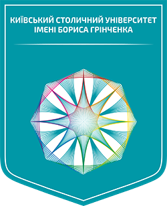

ПУТІВНИК ПО КУРСУ · РОЗДІЛ 1
Змістові модулі
01
Чотири теми формують єдину траєкторію — від метрик до управління дефектами.

Надійність та якість ПЗ · Путівник по курсуНадійність та якість
програмного забезпечення
комп’ютерних систем
Освітній рівень Магістерський
Спеціальність F3 «Комп’ютерні науки»
Обсяг і формат 4 кредити ЄКТС · 4 модулі · екзамен
Чотири теми формують єдину траєкторію — від метрик до управління дефектами.
Що саме робити в Moodle, аби послідовно сформувати й підтвердити результати навчання.
| Складник | М1 | М2 | М3 | М4 | Разом |
|---|---|---|---|---|---|
| Лекції | 2 | 2 | 2 | 2 | 8 |
| Практичні заняття | 6 | 6 | 8 | 4 | 24 |
| Самостійна робота | 14 | 12 | 12 | 12 | 50 |
| Модульний контроль | 2 | 2 | 2 | 2 | 8 |
| Разом за модулем | 24 | 22 | 24 | 20 | 90 |
| Модуль | Кількість | Головна практична діяльність |
|---|---|---|
| 1 · Якість ПЗ | 3 | Стандарти якості та метрики коду |
| 2 · Надійність | 3 | Моделювання відмов і розрахунок показників |
| 3 · Тест-дизайн | 4 | Аналіз вимог, сценарії та тест-кейси |
| 4 · Виконання | 2 | Запуск тестів і документування дефектів |
Як накопичуються первинні бали і формується підсумкова оцінка за дисципліну.
| Модуль | Самостійна | Практичні | Модульний контроль | Разом |
|---|---|---|---|---|
| Модуль 1 | 5 | 30 | 25 | 60 |
| Модуль 2 | 5 | 30 | 25 | 60 |
| Модуль 3 | 5 | 40 | 25 | 70 |
| Модуль 4 | 5 | 20 | 25 | 50 |
| Усього | 20 | 120 | 100 | 240 |
| Рейтинг | ECTS | Рівень |
|---|---|---|
| 90–100 | A | Відмінно |
| 82–89 | B | Дуже добре |
| 75–81 | C | Добре |
| 69–74 | D | Задовільно |
| 60–68 | E | Достатньо |
| 35–59 | FX | Незадовільно — можливе повторне складання |
| 1–34 | F | Незадовільно — повторне вивчення курсу |
Куди перейти, де знайти потрібний матеріал та як розпочати навчання.
Почніть із програми та модуля 1